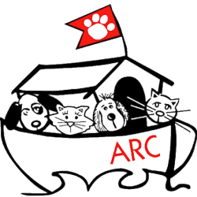
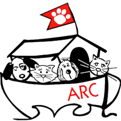

Nathan Winograd: Animal Activist
Website
Jackson Galaxy: "Cat Daddy"
YouTube
C.H.U.L.A: Animal Activism Organization
Citizens for a Humane Los Angeles focuses on fact finding for issues that plague Los Angeles and it's animals. We do interviews, take video, read emails and documents to derive our opinions. We look at the leaders of LA and determine who is supportive of a progressive animal movement and offer our support.
We want a comprehensive reformation of LA Animal Services. We show how false metrics, like live release rates, leaves dogs and cats on the streets to suffer and be killed because bringing them into the shelter crumbles the only leg LAAS has to show any performance for this city.
We want a comprehensive outreach program, departmental collaboration, community out reach, effective mediation of dog and cat issues, responsive hearing clarification rates (not even documented). We want a vibrant volunteer program, supportive personal programs for staff and volunteers, application of already present animal control laws
Facebook
ALDF: Animal Legal Defense Fund
The Animal Legal Defense Fund files high-impact lawsuits to protect animals from harm, provides free legal assistance and training to prosecutors in their fight against animal cruelty, supports animal protection legislation, and provides resources and opportunities to law students and professionals to advance the field of animal law.
Website
 
